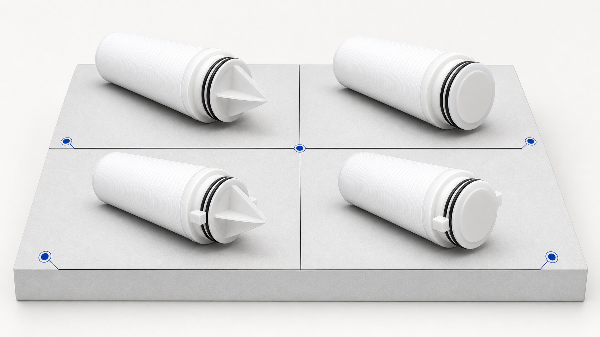

Industrial PP Filter End Configurations — 222/226, Fin and Flat
PP · accepted facts onlyIndustrial cartridge end configuration combines the adapter interface with the opposite closed-end shape. The selectable vocabulary is 222 or 226 with fin or flat; actual housing fit must be confirmed for the project.

PP
Verified technical information
Source-listed options must be confirmed against the quotation and production drawing.
PP
Configuration
222 + finConfirm the cartridge length, outside and inside diameters, micron rating, end configuration, seal material and housing fit before quotation.
222 + flatConfirm the cartridge length, outside and inside diameters, micron rating, end configuration, seal material and housing fit before quotation.
226 + finConfirm the cartridge length, outside and inside diameters, micron rating, end configuration, seal material and housing fit before quotation.
226 + flatConfirm the cartridge length, outside and inside diameters, micron rating, end configuration, seal material and housing fit before quotation.
PP
How to select
- Send the application, feed-water condition and required sediment-control stage.
- Confirm cartridge length, OD, ID, micron rating, end configuration and seal material.
- Confirm the housing interface, quantity, packaging and required documents.
FAQ
How to select
Which 222/226 and fin/flat combinations are listed?
The industry configuration vocabulary used here is 222 + fin, 222 + flat, 226 + fin and 226 + flat. Housing fit must be confirmed before quotation.
What should a buyer confirm for Industrial PP Filter End Configurations — 222/226, Fin and Flat?
Confirm the cartridge length, outside and inside diameters, micron rating, end configuration, seal material and housing fit before quotation.
Request a technical quote: Industrial PP Filter End Configurations — 222/226, Fin and Flat
Confirm the cartridge length, outside and inside diameters, micron rating, end configuration, seal material and housing fit before quotation.